Linux has a wide variety of variations, or flavors. They have software based on what a user needs such as Kali Linux, used for ethical hacking, and Ubuntu, for everyday use. This manual will cover Ubuntu Linux distribution and how to make your laptop run faster and safer.
Improving Start Up Speed
There are a variety of ways to make Ubuntu Linux start up faster. We will begin with some basics and move to intermediate knowledge of the system.
- The first method to improve your startup is to limit Automatic Startup Applications.
- Log in onto your system with your credentials
- Search up "Startup Applications" on your search bar (Ubuntu unity) and click it 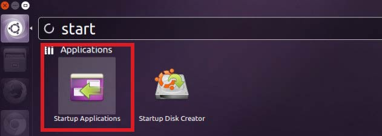
- Here you can edit any programs that you do not want on startup. You can also remove or edit these programs with the buttons on the side. 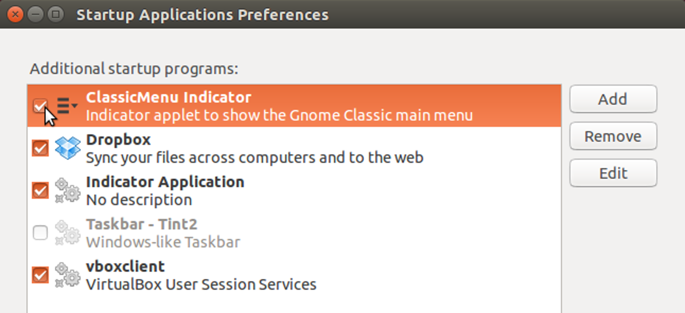
- Another way to improve your bootup time is to install a preload up program. You can do this by taking the following steps:
- Open up your terminal on Ubuntu
- Type in the command: "sudo apt-get install preload" 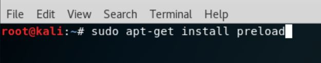
These are just a few ways to improve your Ubuntu start up.
Maintaining device performance
The following is a way to update your Ubuntu linux. To do so, we are going to be using the command line. For the command line to work, you have to write the command exactly as it is shown. In Linux, a spelling mistake or a space affects everything. Follow these steps to update Ubuntu using terminal:
- Open the terminal application on your system
- Install either the apt command or apt-get command 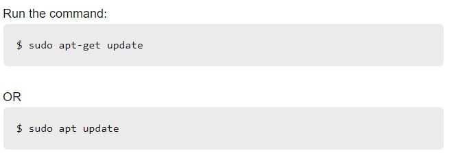
- Install the newest versions of all installed packages on Ubuntu with the following command 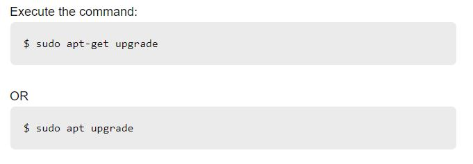
- You may need to reboot the Linux server if kernel was updated by using the command 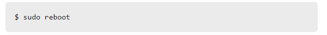
This is the main way to update your Ubuntu OS through the command line.
Cleaning up system storage
To help clean up your Ubuntu system, we will be using the terminal again. To clean your system, follow the steps below:
- Run your default Ubuntu software manager to remove unwanted apps, files, and folders. 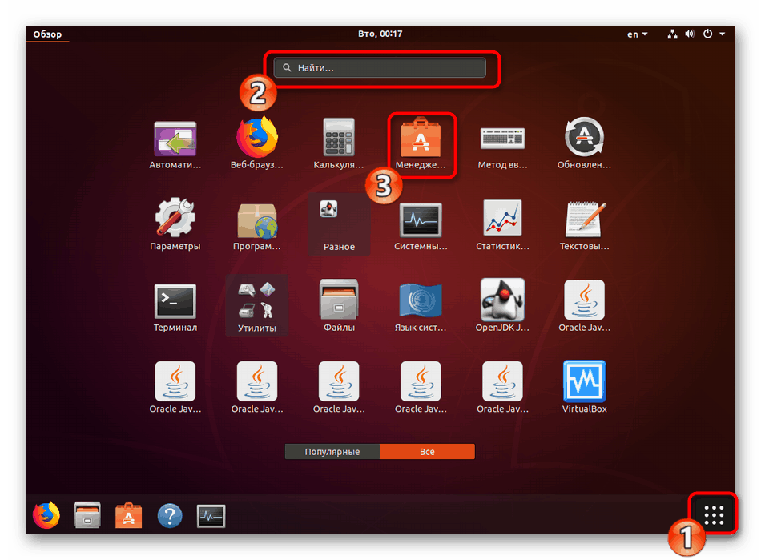 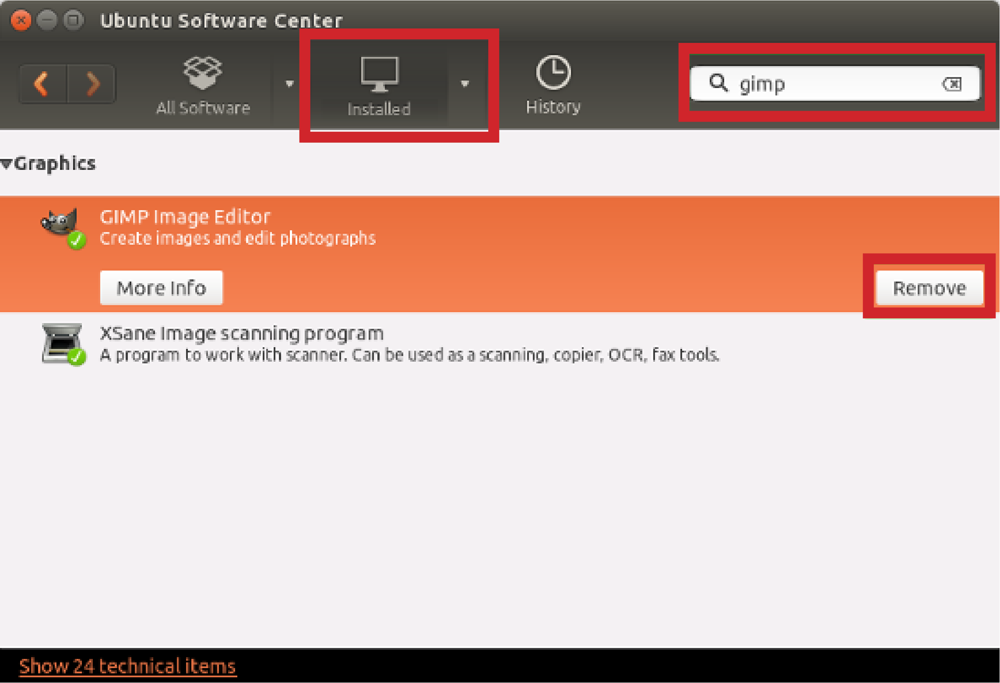
- To remove unwanted packages and dependencies, run the command 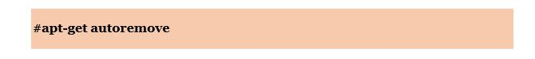
- Clean the APT cache
- The following command tells you the size of the APT cache on your system 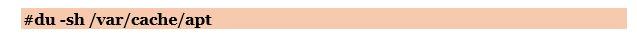
- To clean the APT cache, run the command 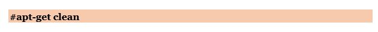
Keeping your device secure
There are a variety of ways to make your system more secure. The following ways are listed below:
- Enable Full Disk Encryption (FDE)
- This is available right before installation of Ubuntu 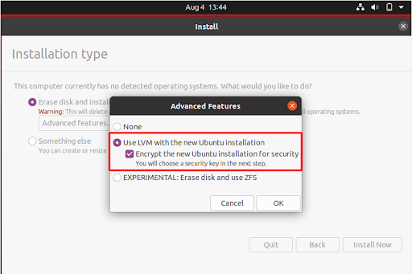
- Keep your software up to date by following the path:
- Enable Linux Firewall by using the terminal
- Run the command: "sudo ufw enable" 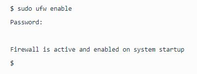
System Settings > Software & Updates > Updates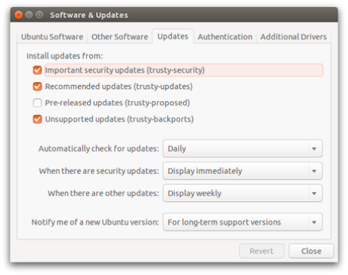